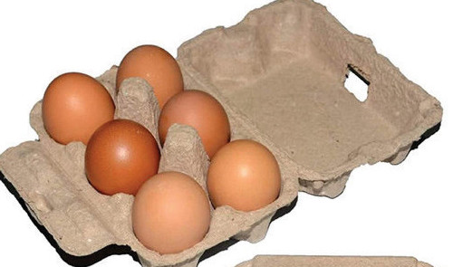
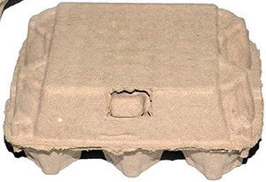
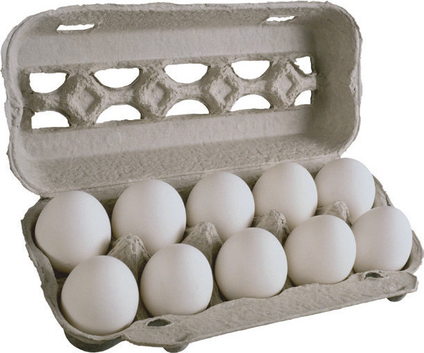

If it is necessary to clean dirty/soiled eggs, a piece of cloth, soaked in warm water can be used to wipe gently the surface of the egg shells. However, as much as it is possible, the need for cleaning should be minimal. This means it is easier to maintain a clean environment where eggs are to be laid than to clean soiled eggs. This can be achieved by cleaning the nest boxes and by keeping a supply of fresh bedding as often as possible. Cleanliness of eggs can also be achieved by placing perches higher than the nest boxes. This is because chickens like to roost in the highest part of the house that they can access. Therefore, perches being higher than nest boxes will discourage them from roosting in and soiling their boxes.
Grading of eggs:
Grading is a practice adopted in places where eggs are sold by class. Eggs are classified by weight and in some markets, the shell colour is added to the value. In this case, brown eggs are preferred to the white ones. You can grade your eggs according to size and colour if the market demands so.
Packaging eggs for the market:
There are many ways of packaging eggs for the market. In all forms of packaging, the principal requirement is to ensure that the eggs remain wholesome throughout the transit to the market, and when in shelves in the market. It is recommended that eggs should be packed in special egg trays such as those shown in Figures 11.6 (a) to (d). When eggs are packed for the formal market, the package should indicate the following:

Figure 11.6 (a): 6-eggs package

Figure 11.6 (a)

Figure 11.6 (b): 10-eggs package